一种基于平台的降低存储器设计验证周转时间（Turn-Around Time）的方法
存储器大规模回归验证中，回归监控、日志分析、debug rerun、波形调试与覆盖率分析分散在多个工具，失败日志需人工分类、根因需从失败点手动回溯，验证 TAT 因此被拉长。论文基于 Synopsys VMS 构建统一验证平台，用模块化 checker（Function Check、Core Operation Check、UVM PF Check）自动提取 fail keyword、instance 与 timestamp 生成 fail bucket，并通过 RDA 将失败日志与 Verdi 波形自动关联、预加载信号列表。增量式流程在失败发生时实时 bucketing 并行触发 debug rerun，同 bucket 共享一份 FSDB，降低 LSF 集群与磁盘负担。1,500 个 testbench 的回归实验显示：人工调试周期减少 50%，回归迭代从 3 次降至 2 次，总 debug TAT 缩短 33%，debug 生产力提升约 1.5×。作者称该架构可扩展至 DRAM、controller IP 与 subsystem 级验证。
大规模存储器回归测试中，回归监控、日志分析、debug rerun、波形调试与覆盖率分析由分散的多个工具完成，工程师需人工逐条检查失败日志并分类失败原因，波形调试需从最终失败点手动回溯根因，fail log 与波形之间缺乏关联；in-house 工具还难以获得商业 EDA 工具的最新 debug 能力。这些因素显著拉长了 debug 时间与整体验证 TAT。
基于商业 EDA 工具 Synopsys Verification Management System（VMS）构建统一验证平台，将回归监控、日志分析、自动 debug rerun、波形调试与覆盖率分析整合到单一环境。关键技术手段：1) 模块化 checker 结构（Function Check、Core Operation Check、UVM PF Check）在日志中记录失败 keyword、instance 位置与仿真时间，自动生成 fail bucket；2) Regression Debug Automation（RDA）基于预定义 fail keyword 自动提取 instance path、timestamp 与相关信号列表，直接联动 Verdi 波形查看器并预加载 FSDB 与信号列表，支持 schematic-waveform cross-probing；3) 增量式回归失败分析：失败发生即实时 bucketing，同 bucket 仅生成一份 FSDB，DF（Debug Facilitator）引擎并行准备波形、仿真状态与 UVM transaction，使 debug 与回归运行并行；4) 通过 JavaScript 定制 VMS，引入 Stuck 与 Runtime Fail 状态及 GUI 定制，对 Host log 已记录 Fail 的测试自动 kill 或重跑。
1,500 个 testbench 的回归实验中，人工调试周期（manual debugging effort）减少约 50%
回归迭代次数从 3 次降至 2 次
总 debug TAT 缩短 33%
验证工程师 debug 生产力提升约 1.5×
136 个 memory function 细分后，失败 testbench 自动归入 8 个 bucket；插入 memory-function、core operation 与 UVM PF checker 后，fail 日志自动分类为 157 个 bucket
回归仿真 runtime 分布：最短 846 秒，最长 707,838 秒（约 8.2 天），单次回归 TAT 由最长 runtime 决定
与以往在 Linux 终端使用分散工具和 in-house 脚本的流程相比，主要区别在于：将五个割裂环节统一到单一商业 EDA 平台，消除工具切换开销与自研工具维护成本；以模块化 checker + RDA 实现 fail 的功能级自动分类与日志-波形直接关联，替代人工日志分类与探索式波形回溯；实时 bucketing 使同一根因只需一份 FSDB，debug rerun 与回归并行执行并降低 LSF/磁盘负担；论文强调这是结合商业 EDA 能力与领域专用 checker 的可标准化自动 debug 工作流，而非依赖 ad-hoc 脚本或个人经验。
相关度级别：high
命中能力域：2.4 设计验证方法学 | 2.7 EDA/验证自动化与 AI 辅助 | 2.6 仿真性能与加速器
理由：论文直接命中团队 2.4 设计验证方法学与 2.7 EDA/验证自动化能力域：团队为 LPDDR/HBM4/UCIe 等存储与互连 IP 交付大规模 UVM 回归，日常痛点正是失败日志人工 triage、debug rerun 排队与日志-波形手动关联，论文的 VMS+RDA 统一 debug 自动化流程与模块化 checker 分类体系可直接对标团队回归基础设施。其实时 bucketing、FSDB 共享与 LSF/磁盘资源优化也涉及 2.6 中大规模回归管理这一项（虽不涉及 Emulation/FPGA 加速）。结论明确声称该方法可扩展到 DRAM、controller IP 与 subsystem 级验证，与团队产品线场景高度重合，且给出可量化的 TAT 收益（33%）与生产力收益（1.5×），具备直接落地参考价值。
建议动作：深入精读并做内部分享
Junho An 1 , Seonyong Lee 2 , Minseon Kim 3 , Jaehyun Park 4 , Gyehyun Na 5 , Dongeun Lee 6 , Kiuk Kim 7
三星电子，韩国京畿道华城市
{jh0119.an 1 , sj91089.lee 2 , ms7489.kim 3 , gh.na 5 , dongeun1.lee 6 }@samsung.com
Synopsys，美国森尼韦尔
{jaehyunp 4 , kiuk 7 }@synopsys.com
摘要——存储器验证中的大规模回归测试需要在日志分析和调试重跑方面投入大量人工工作。在传统的分布式环境中，回归监控、日志分析、波形调试和覆盖率分析需跨多个工具执行，导致效率低下且周转时间（TAT）延长。本文提出了一种基于商用电子设计自动化（EDA）工具构建的集成化验证平台，以精简这些碎片化的流程。所提出的平台在单一环境中统一了日志分析、自动调试重跑、波形关联和覆盖率分析。该平台采用模块化检查器（checker）结构，可自动从仿真日志中提取失败关键字、实例位置和时间戳，生成失败分组（fail bucket），并通过回归调试自动化（Regression Debug Automation, RDA）功能将其与相应的波形关联起来。特别地，由于高密度存储器具有很深的层次结构，将仿真日志与波形相关联能够高效地解析相关调试信号。在包含 1,500 个 testbench 的实验中，所提出的平台将人工调试周期缩短了 50%，将回归迭代次数从三次减少到两次，并将总调试 TAT 缩短了 33%。这些结果表明，这是一种可复现且可扩展的方法学，能够显著提升大规模存储器验证中的调试生产力和工作流效率。
随着存储器技术的不断进步，如今已支持各种功能与选项，验证复杂度呈指数级增长。为了使用 NAND Flash 存储器实现 SSD 和 microSD 卡等多样化的应用产品，必须针对每一种功能组合保证电路运行的正确性。因此，电路设计变得更加复杂，验证用例的数量也急剧增加。随着电路复杂度的提升，出错的概率也随之上升，调试仿真结果所需的时间成为延迟整体验证周转时间（turn-around time, TAT）的主要因素 [1]。由于调试消耗大量的工程资源，缩短调试时间对于提高验证效率至关重要。本文提出一种集成验证平台技术以提升存储器验证效率，并讨论其有效性。
在传统的存储器验证环境中，通常使用在 Linux 终端上运行的各个独立工具来执行回归监控、日志分析、调试重跑、电路调试以及覆盖率分析。然而，这种方法需要在各工具之间频繁切换，降低了效率，也限制了功能集成。尤其在大规模回归测试中出现大量失败时，工程师必须人工检查日志以对失败原因进行分类。即使在波形调试过程中，工程师也不得不从最终失败点出发，人工回溯至根本原因。由于失败日志与波形之间缺乏关联，这种方法拖慢了分析速度并延长了调试时间 [2]。此外，在使用内部自研工具时，难以应用商用电子设计自动化（EDA）工具所提供的最新调试方法。这些限制制约了验证效率的最大化。
本文提出一种基于平台的方法，聚焦于五项关键改进，通过解决传统方法的局限性来提升验证效率。
如图 1 所示，在传统的分布式验证流程中，回归测试监控、日志分析、调试重跑、波形调试和覆盖率分析均通过各自独立的工具完成。这种碎片化的方式由于频繁的工具切换以及各功能之间缺乏连通性而造成了效率损失。此外，内部自行开发的脚本或工具需要专职维护工程师，并且只能有限地使用商用电子设计自动化（EDA）解决方案所提供的高级调试功能。
为解决上述问题，如图 2 所示，我们采用商用解决方案 SNPS Verification Management System（VMS）实现了一个单一集成的验证平台。该平台将回归测试监控、日志分析、自动调试重跑、波形调试和覆盖率分析集成到单一环境中。通过消除工具切换开销并统一验证工作流程，该方案同时提升了运行效率与可维护性。
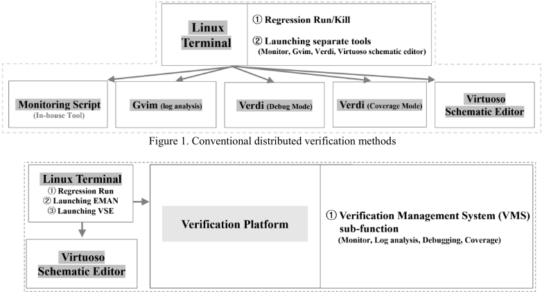
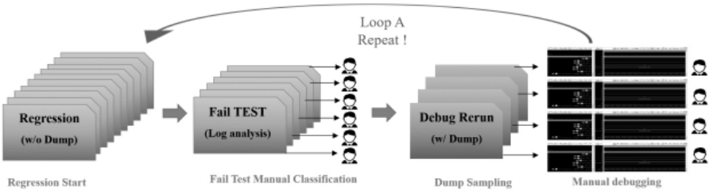
来自最终 UVM 通过/失败结果
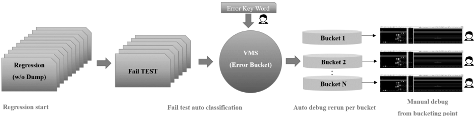
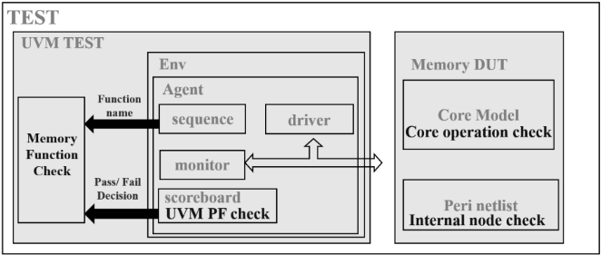
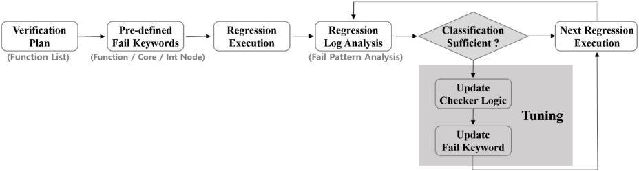
增强仿真日志与波形之间的关联能够提升调试效率。配置了一个检查器（checker），用于在日志中记录每次失败的关键字、实例位置和仿真时间。当回归测试期间出现失败日志时，商用电子设计自动化（EDA）工具的回归调试自动化（Regression Debug Automation, RDA）功能会基于预定义的失败关键字，自动提取实例路径、时间戳以及相关信号列表。这些信息已被直接链接到波形查看器，使工程师能够立即从失败实例和仿真时间处开始调试。由此，不必要的人工搜索被消除，根因分析所需的时间显著缩短。
图 7 展示了商用 EDA 工具如何生成失败分组（fail buckets）并提供 RDA 报告。具有代表性的测试平台（bench）已被自动重新运行以进行调试，通过图形用户界面（GUI）的“Waveform Analysis”命令，波形查看器会自动启动，并预加载相应的 FSDB 文件和预定义的信号列表。此外，原理图—波形交叉探测（schematic-waveform cross-probing）使工程师能够从失败点高效地追溯根因。
在如图 8 所示的传统回归环境中，工程师需要手动监控回归进度，直到出现失败，然后识别该失败并手动启动调试重跑（debug rerun）。在这种工作流程中，调试重跑只能在工程师检测到失败之后才能开始，导致在 FSDB 波形文件生成之前存在显著延迟。此外，为所有失败的测试生成 FSDB 会对 LSF 集群资源造成显著负载，并消耗大量磁盘空间。
我们通过采用商业 EDA 解决方案 SNPS VMS + Regression Debug Automation（RDA）的增量调试功能来应对这些挑战。如图 9 所示，当在回归集中检测到失败时，该方法会自动执行并行调试重跑，并基于错误/失败日志分析执行失败分组（bucketing，即失败聚类）。失败分组是实时执行的，因此共享相同根因的测试会被归入同一个分组，只需生成一个 FSDB 即可。此外，根据用户的选择，一旦发生错误，测试即可被立即终止（kill）并归入分组。DF（Debug Facilitator）引擎会立即执行，并准备诸如波形、仿真状态和通用验证方法学（UVM）事务等调试数据库。这些使工程师能够在回归的其余部分继续运行的同时，启动失败用例的调试。总体而言，验证工程师可以缩短调试处理时间，并减轻机器资源和磁盘空间的负担。
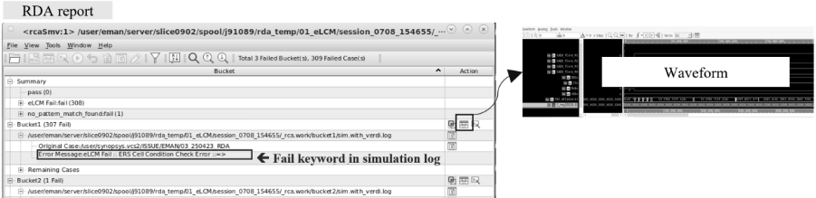
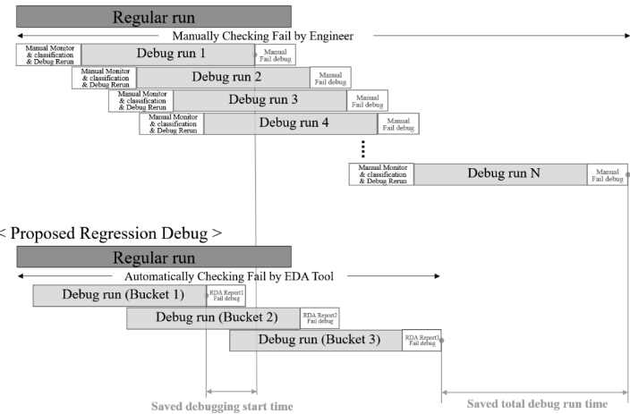
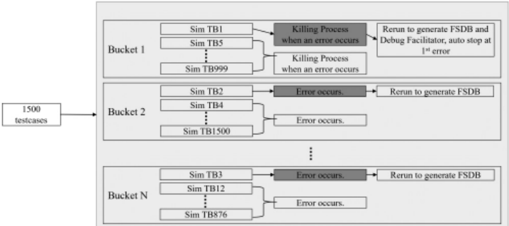
During regression, verification engineers often wish to customize the environment to improve verification efficiency. In our verification environment, each test produces two logs: a Host log and a Test log. The Host log records the pass/fail outcome of each sequence (Seq) as it completes, while the Test log is a conventional simulation log. The final pass/fail result for a test is determined by examining both logs. In this context, we found it beneficial to introduce additional statuses beyond pass/fail - specifically, Stuck and Runtime Fail. We define Stuck as a state in which the test continues to run, but no log updates occur for longer than a specified threshold. Runtime Fail refers to a case where the Host log has already recorded a Fail for some sequence, yet the simulation is still progressing and the Test log continues to be produced. As shown in Fig. 10, although VMS does not natively support these statuses, we enabled them through customization, allowing engineers to construct a regression environment in VMS that better matches their verification needs. For Runtime Fail cases, where further simulation is unnecessary once a Fail has been recorded in the Host log, engineers can kill or re-run the test, reducing the need for engineers to monitor logs in real time.
In addition, as shown in Fig. 11, GUI customization enables engineers to create needed buttons and present useful information. With a single click in the GUI, verification engineers can open the RDA report (bucketized results) and launch a debugger tool to begin debugging. We also display, within the GUI, the available disk space for each project account so that engineers can reference disk resources when running regressions. These capabilities do not require modifying complex internal tool code; engineers can implement them by writing simple java-script and registering it with VMS. Furthermore, various JavaScript examples - such as disk usage and coverage trend - are included within the VMS. Engineers can leverage these examples for maintenance or extend them to add new functionality.
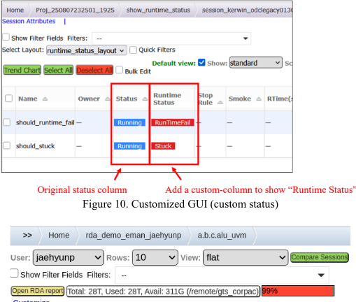
Customize...
为评估所提出方法的有效性，我们执行了包含 1,500 个 testbench 的回归实验，并与传统流程进行了对比。图 12 展示了仿真运行时间的分布情况。最短运行时间为 846 秒，最长运行时间达到 707,838 秒（约 8.2 天），这意味着单次回归的周转时间由最长运行时间决定。要使用本文所讨论的验证方法学并借助 SNPS VMS Tool（VC Execution Manager）和 RDA Tool（Verdi），需要一个 VC-EMAN-SERVER 许可证，且每个回归集还需要一个 VC-EMAN-CLIENT 许可证。此外，使用 RDA 还需要一个 Verdi 许可证。
在传统流程中，每个失败日志都必须人工分析，调试重跑也需逐个执行。当 100 个 testbench 出现失败时，工程师需要人工检查全部 100 份日志，常常重复调试由同一根因引起的冗余失败。这一过程增加了存储空间占用，并消耗了大量人工分诊时间。如图 13 所示，第一次回归通常需要人工调试运行时间较短的功能测试；第二次回归重跑所有 testbench 以调试其余失败；第三次回归则对剩余问题进行验证和修复。
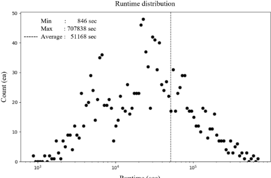
运行时间（秒）
相比之下，如图 14 所示，所提出的流程在初始设置阶段定义了失败关键字，并在回归过程中按功能类别自动对失败进行分类。在本实验中，136 个存储器功能被进一步细分，失败的 testbench 被自动归入八个桶（bucket）。系统自动从每个桶中选取一个代表性 testbench 重跑以进行调试，并生成根因分析所需的波形转储（wave dump）文件，全程无需工程师干预。尽管某些桶中包含多个根因、偶尔仍需进行第二次回归，但分类和重跑队列管理等重复性人工任务已被消除，从而使第三次回归不再必要。因此，总调试时间缩短了约 33%。增强的日志-波形关联还支持在失败时刻自动加载预定义信号，使工程师能够立即基于失败关键字开始调试。与传统基于探索的调试方式相比，该特性提供了一种更快、更聚焦的根因识别途径。
表 I 对所提出的集成平台与传统环境进行了比较。所提出的平台将此前相互独立的五个过程——仿真监控、日志分析、调试重跑、波形分析和覆盖率分析——统一到单一环境中，形成了更高效的工作流程。如图 15 所示，通过插入存储器功能、核心操作和 UVM PF 检查器（checker），系统自动将失败日志分类到 157 个桶中。
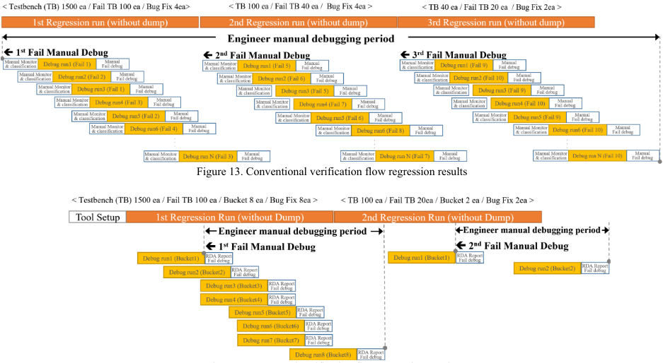
| Category | Conventional | Proposed |
|---|---|---|
| Platforms for debugging (ea) | 5 | 1 |
| Bucket generation method (way) | 1 (UVM PF) | 3 (UVM PF, Function, Core Operation) |
| Auto-Gen buckets by UVM PF check (ea) | 1 | 1 |
| Auto-Gen buckets by function check (ea) | 0 | 136 |
| Auto-Gen buckets by core operation check (ea) | 0 | 20 |
| Total Auto-Gen buckets (ea) | 1 | 157 |
| Category | Conventional | Proposed |
表 II 总结了传统方法与所提方法中的调试周转时间（TAT）以及人工调试工作所耗费的时长。如图 16 所示，所提出的平台将人工调试工作量减少了约 50%，将回归迭代次数从三次降至两次，并将总调试 TAT 缩短了 33%。因此，验证工程师的调试生产率提升了约 1.5 倍，实现了可复现且可度量的 TAT 缩减。
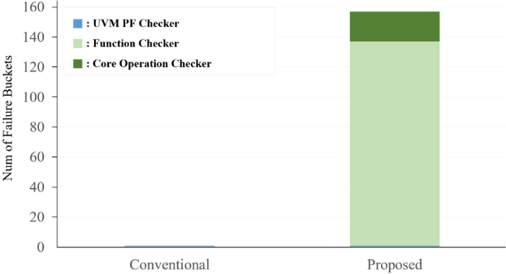
| Category | Conventional | Proposed | Improvement |
|---|---|---|---|
| Regression count | 3 | 2 | ↓ 33% |
| a Total debug TAT (days) | 24.6 | 16.4 | ↓ 33% |
| Engineer manual debugging period (days) | 24.6 | 12.3 | ↓ 50% |
| Category | Conventional | Proposed | Improvement |
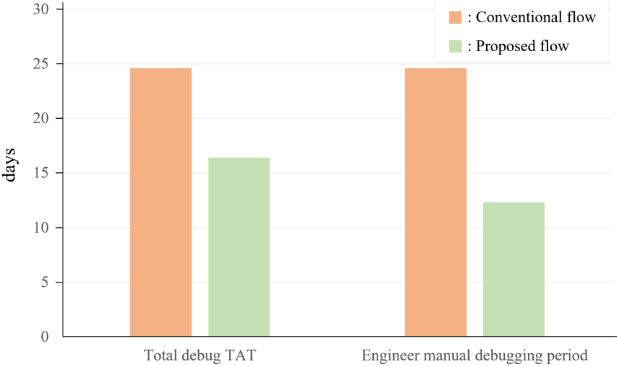
An integrated verification platform has been developed to maximize debug efficiency during regression testing. The platform combines log analysis, automatic debug rerun, waveform correlation, and coverage analysis into a unified environment, eliminating unnecessary tool switching and manual operations. By introducing a modularized checker structure - comprising Function Check, Core Operation Check, and UVM PF Check - the system enables automated fail classification at the function level and direct correlation between simulation logs and waveforms. This allows engineers to begin root-cause analysis immediately from the failure instance, greatly reducing debug latency. Experimental results have shown that the proposed platform achieved a 33% reduction in total debug TAT and improved verification engineer productivity by approximately 1.5× compared to the conventional flow. Although the proposed framework was validated using Flash memory regression, its architecture is not limited to a specific memory type. The same approach can be extended to other memory and SoC verification domains that exhibit repetitive debug patterns, deep protocol stacks, and large regression volumes, such as DRAM, controller IPs, and subsystem-level verification. More importantly, this paper illustrates a standardizable automated debug workflow that combines commercial EDA capabilities with domain-specific checkers, rather than relying on ad-hoc scripts or individual expertise. Therefore, the proposed platform enables verification teams to adopt automated debug flows with minimal customization, allowing immediate practical application in real-world verification environments.